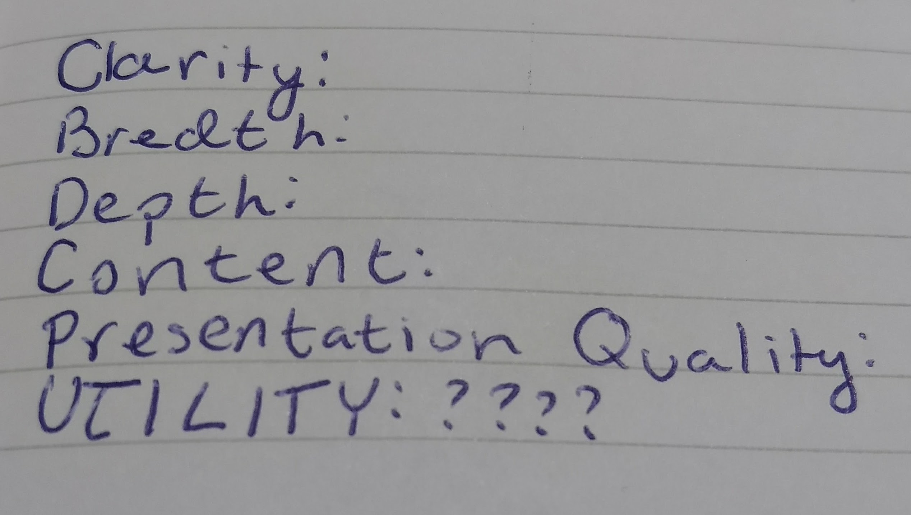

TypeScript
M&M
Michela Marchini and Max Zlotskiy
What is it?
TypeScript is a superset of JavaScript. This means that all JavaScript code is inherently TypeScript code. In addition, TypeScript compiles into JavaScript easily using the TypeScript compiler, as TypeScript cannot be run on browsers by itself. However, it still relatins all the additional TypeScript functionality
History
TypeScript was released in 2012 by Microsoft. It was created in attempt to address JavaScript’s shortcomings with developing large-scale programs. TypeScript developers wanted to maintain compatibility with JavaScript, while implementing class-based programming, that would make development easier. TypeScript is commonly used to develop JavaScript applications for client-side use, but it is also used in Node.js for server-side execution.


Why would I ever use this?
So if JavaScript and TypeScript are so similar, why would you use TypeScript?

- TypeScript has features that are either not part of JavaScript or are part of newer versions of JavaScript not supported by most browsers
- TypeScript is a class-based language which makes large-scale development a lot more feasible
- TypeScript gives compile-time errors that make sense as opposed to JavaScript’s vague run-time errors
Features
Syntax
Var vs. Let
In TypeScript the keyword let is used in preference to JavaScript's var because it confines variables to the scope/block they were defined in, and doesn't let you redefine the same variable.
Rest, Optional and Default Parameters
//rest
let add = function(...a) {
let sum = 0;
for(let i = 0; i < a.length; i++) { sum += a[i]; }
return sum;
};
console.log(add(1));
console.log(add(1, 2, 3));
//optional
let greet = function(first, last?) {
console.log(first + " " + last);
};
console.log(greet("Bond"));
console.log(greet("James", "Bond"));
//default
let dateFormat = function(day, month, year=2018) {
console.log(day + "/" + month + "/" + year);
};
console.log(dateFormat(3, 16));
console.log(dateFormat(3, 16, 2017));
Type Annotations
let amount : number = 5;
amount = 42;
amount = true; //error
let name : string = "DW";
name = {}; //error
let yesno : boolean = true;
yesno = false;
let random : any = "pizza";
random = 5; //ok
random = true; //ok
let repeat = function(str : string, times : number) : string {
result = "";
while(times > 0) {
result += str;
}
return result;
};
console.log(repeat("hi", 3));
console.log(repeat(5, 8));
Type Inferencing
If it walks like a duck, looks like a duck, and sounds like a duck, then it's a duck.
let myVar = 5; //assumed to be a number
myVar = true; //error
//TypeScript infers that isOnScreen returns boolean
let isOnScreen = function(point: {x: number; y: number}) {
return (point.x > 0 && point.y > 0 && point.x < 500 && point.y < 500);
};
var circle = {x: 5, y: 50, radius: 10, fill: "green"};
var square = {x: 50, y: 5, side: 10, fill: "blue"};
var mouseEvent = {x: 50, y: 5};
console.log(isOnScreen(circle));
console.log(isOnScreen(square));
console.log(isOnScreen(mouseEvent));
//Do you think this needs to be fixed?
let listener = function(event) {
console.log(event.button);
};
Interfaces
interface Book {
title : string;
author : string;
}
let book_info = function(book : Book) : string {
return "Title: " + book.title + ", Author: " + book.author;
}
let harryPotter = {title : "Harry Potter", author : "JK Rowling"};
console.log(book_info(harryPotter));
Classes
class Animal {
taxonomy : string;
constructor(public family: string, public genus: string, public species: string) {
this.taxonomy = family + " " + genus + " " + species;
}
}
let bob : Animal = new Animal("Hominidae", "Homo", "Sapien");
//Inheritance!!!
class Dog extends Animal {
name : string;
constructor(public name: string) {
super("Canidae", "Canis", "Lupus");
}
bark() {
console.log(this.name + " just barked you!");
}
}
let greatDane = new Dog("Scooby Doo");
greatDane.bark();
Summary
TypeScript is cool. You can play with it here https://www.typescriptlang.org/play/index.html. If you ever find yourself writing large-scale JavaScript applications, it's a super useful tool to have because it can save you a lot of time deciphering vague "Type Error"s. It also allows you to use features in javascript that most browsers don't support.
Written/performed by Max Zlotskiy and Michela Marchini, aka M&M